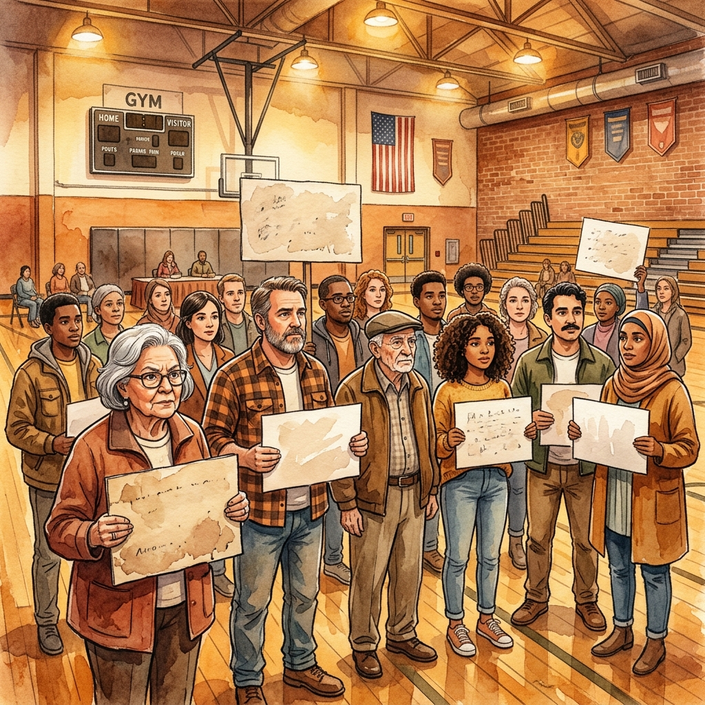
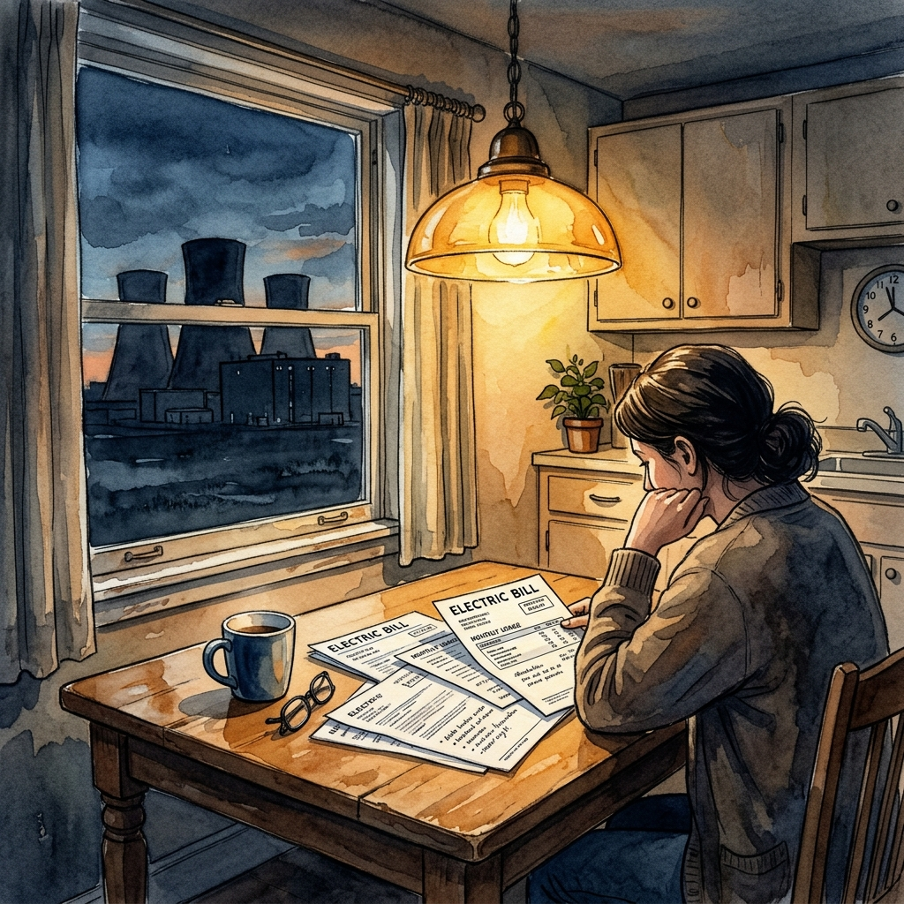

Three years ago, 69% of Virginia voters were comfortable with data centers moving into their communities. Today, that number has collapsed to 35%.

The shift did not happen quietly. In Loudoun County — home to more data centers per square mile than anywhere else on Earth — residents began capitalizing on local election cycles to push back. Nearly 400 grassroots organizations formed nationwide in a single year, double the number from the year before.

What precipitated the anger was not the server farms themselves but the electricity bills that followed. Fifty-seven percent of voters believe data centers have driven up their home energy costs. Sixty-two percent of Americans now say the costs outweigh the benefits.
Lots of people are making money on these institutions. Not Virginians who pay for it.
— Sylvia Whitt, 78, Charlottesville
Politicians who once capitulated to tech industry lobbying are recalibrating. Prince William County abandoned a 1,700-acre data center project. A $1 billion development east of Richmond was shelved last August. Governor Abigail Spanberger has taken aim at data center tax breaks.
The tactics have shifted too. Where tech companies once relied on promises of jobs and tax revenue, they now face a harder assessment from voters who have seen their bills and made up their minds.